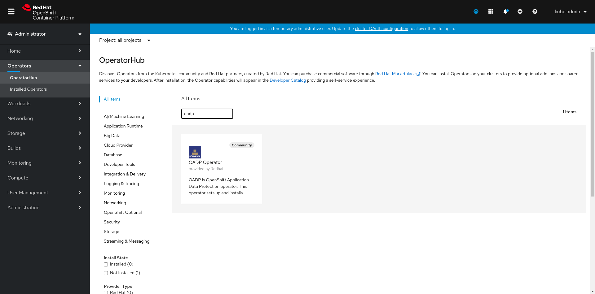

Installation
Getting started with basic install (OLM/OperatorHub)
Installing Operator
You can install the OADP Operator from the Openshift's OperatorHub. You can search for the operator using keywords like oadp or velero

Now click on Install

Finally, click on subscribe, this will create a namespace named oadp-operator if it does not exist and install the OADP operator in it.

Creating credentials secret
Create secret for the cloud provider credentials to be used. Also, the credentials file present at CREDENTIALS_FILE_PATH shoud be in proper format, for instance if the provider is AWS it should follow this AWS credentials template
oc create secret generic <SECRET_NAME> --namespace oadp-operator --from-file cloud=<CREDENTIALS_FILE_PATH>
Creating Velero CR
Now create an instance of Velero CR by clicking on Create Instance as highlighted below:
Finally, set the CR spec values appropriately and click on create.
Verify Operator installation
Post completion of all the above steps (Non-OLM or OLM), you can check if the operator was successfully installed or not, the expected result for the command oc get all -n oadp-operator is as follows:
NAME READY STATUS RESTARTS AGE
pod/oadp-operator-7749f885f6-9nm9w 1/1 Running 0 6m6s
pod/restic-48s5r 1/1 Running 0 2m16s
pod/restic-5sr4c 1/1 Running 0 2m16s
pod/restic-bs5p2 1/1 Running 0 2m16s
pod/velero-76546b65c8-tm9vv 1/1 Running 0 2m16s
NAME TYPE CLUSTER-IP EXTERNAL-IP PORT(S) AGE
service/oadp-operator-metrics ClusterIP 172.30.21.118 <none> 8383/TCP,8686/TCP 5m51s
NAME DESIRED CURRENT READY UP-TO-DATE AVAILABLE NODE SELECTOR AGE
daemonset.apps/restic 3 3 3 3 3 <none> 2m17s
NAME READY UP-TO-DATE AVAILABLE AGE
deployment.apps/oadp-operator 1/1 1 1 6m7s
deployment.apps/velero 1/1 1 1 2m17s
NAME DESIRED CURRENT READY AGE
replicaset.apps/oadp-operator-7749f885f6 1 1 1 6m7s
replicaset.apps/velero-76546b65c8 1 1 1 2m17s
Note: For using the velero CLI directly configured for the oadp-operator namespace, you may want to use the following command:
velero client config set namespace=oadp-operator